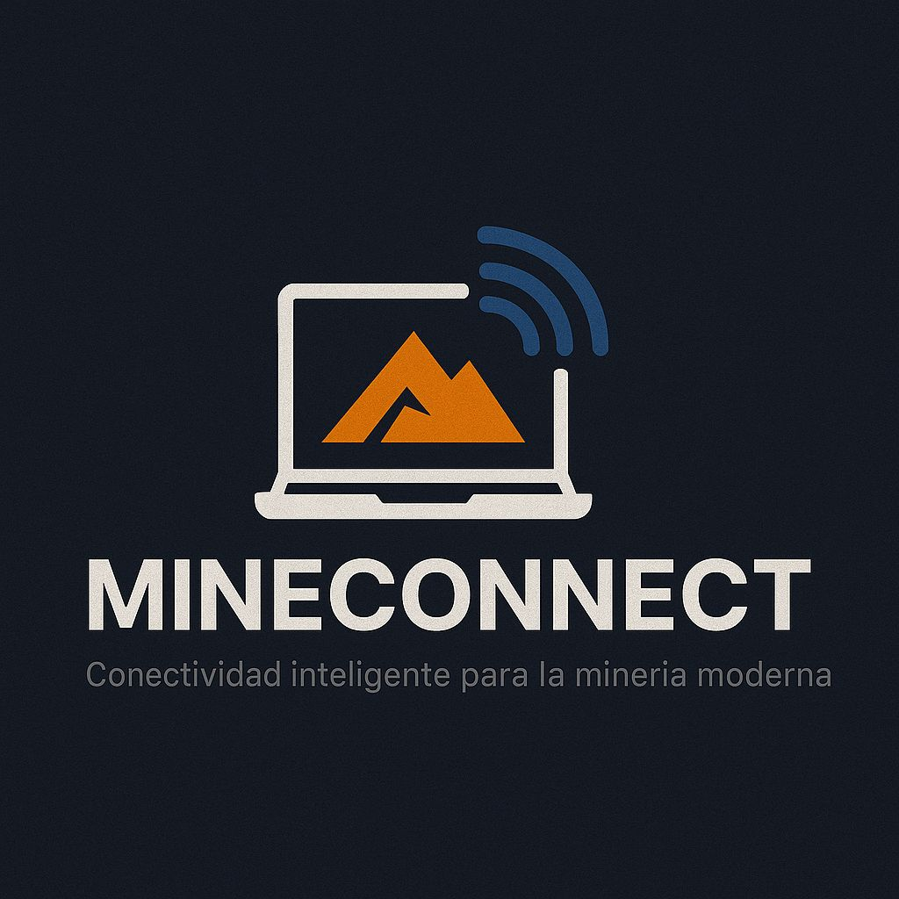

Telecomunicaciones
Soluciones integrales para comunicación en zonas remotas y ambientes hostiles.

Soluciones integrales para comunicación en zonas remotas y ambientes hostiles.

Conectividad confiable y estable, incluso donde no llegan los proveedores tradicionales.

Venta y soporte de computadoras, firewalls, insumos y periféricos para empresas exigentes.
Impulsar la conectividad y la resiliencia tecnológica de las empresas mediante soluciones sólidas, escalables y adaptadas a sus desafíos más exigentes.
Ser referentes regionales en infraestructura IT y telecomunicaciones, acompañando a empresas que operan en condiciones extremas, desde alta montaña hasta aguas abiertas.
Ofrecemos soluciones integrales de telecomunicaciones para garantizar comunicación continua en las zonas más remotas y ambientes hostiles, incluyendo:


Proveemos conectividad confiable y estable, incluso en áreas donde los proveedores tradicionales no llegan, con servicios como:


Comercializamos y damos soporte técnico especializado para: